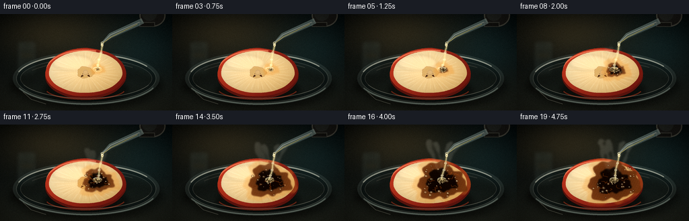
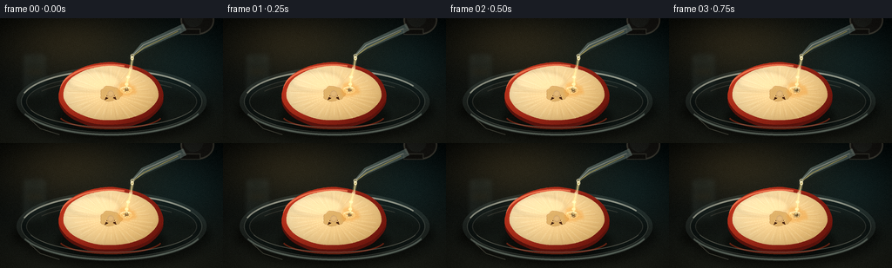
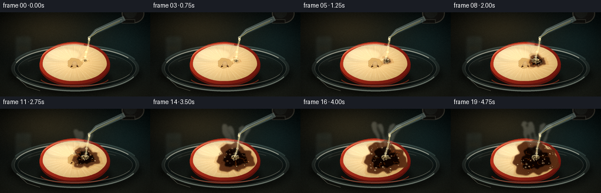
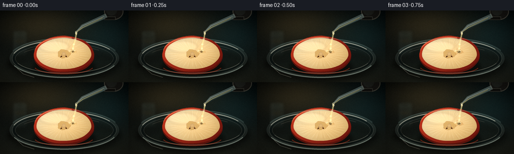
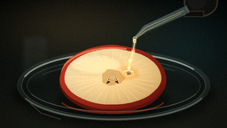
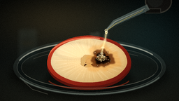
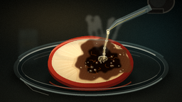
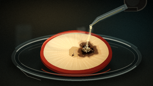

CODING AGENTS AS PIXEL WORLD MODELS
traex/DeepSeek-V4.1-Flash · phygen_152
点击播放 · 原生 RGB 像素
逐轮保存的候选
回放视频、检查图与代码变化。
每份候选均可单独播放。实际图片检查记录在下方工具轨迹中。
候选 01播放与检查图
点击播放 · 原生 RGB 像素

展开代码变化
--- 上一保存版本
+++ 本次保存版本
@@ -0,0 +1,554 @@
+from __future__ import annotations
+
+import math
+from pathlib import Path
+
+import numpy as np
+from PIL import Image, ImageChops, ImageDraw, ImageFilter
+
+import artifact_io
+
+
+ROOT = Path(__file__).resolve().parent
+W, H = 256, 144
+SS = 4
+CW, CH = W * SS, H * SS
+N = 20
+FPS = 4.0
+
+
+def pt(x: float, y: float) -> tuple[int, int]:
+ return int(round(x * SS)), int(round(y * SS))
+
+
+def bx(x0: float, y0: float, x1: float, y1: float) -> tuple[int, int, int, int]:
+ return pt(x0, y0) + pt(x1, y1)
+
+
+def rgba(r: int, g: int, b: int, a: int = 255) -> tuple[int, int, int, int]:
+ return r, g, b, a
+
+
+def smoothstep(a: float, b: float, x: float) -> float:
+ t = max(0.0, min(1.0, (x - a) / (b - a)))
+ return t * t * (3.0 - 2.0 * t)
+
+
+def ellipse_poly(
+ cx: float,
+ cy: float,
+ rx: float,
+ ry: float,
+ phase: float = 0.0,
+ irregularity: float = 0.0,
+ count: int = 220,
+) -> list[tuple[int, int]]:
+ points = []
+ for i in range(count):
+ a = math.tau * i / count
+ wobble = (
+ math.sin(3.0 * a + phase) * 0.55
+ + math.sin(7.0 * a + 1.7 * phase) * 0.28
+ + math.sin(11.0 * a - 0.8 * phase) * 0.17
+ )
+ scale = 1.0 + irregularity * wobble
+ points.append(pt(cx + rx * scale * math.cos(a), cy + ry * scale * math.sin(a)))
+ return points
+
+
+def clipped_layer(layer: Image.Image, mask: Image.Image) -> Image.Image:
+ layer.putalpha(ImageChops.multiply(layer.getchannel("A"), mask))
+ return layer
+
+
+def draw_shadow(
+ canvas: Image.Image,
+ box: tuple[int, int, int, int],
+ alpha: int,
+ blur: float,
+ dy: float = 0.0,
+) -> None:
+ layer = Image.new("RGBA", canvas.size, (0, 0, 0, 0))
+ draw = ImageDraw.Draw(layer)
+ x0, y0, x1, y1 = box
+ draw.ellipse((x0, y0 + int(dy * SS), x1, y1 + int(dy * SS)), fill=(0, 0, 0, alpha))
+ layer = layer.filter(ImageFilter.GaussianBlur(blur * SS))
+ canvas.alpha_composite(layer)
+
+
+def make_background() -> Image.Image:
+ yy, xx = np.mgrid[0:CH, 0:CW]
+ u = xx / (CW - 1)
+ v = yy / (CH - 1)
+
+ top = np.array([9, 15, 17], dtype=np.float32)
+ bottom = np.array([26, 31, 29], dtype=np.float32)
+ arr = top[None, None, :] * (1.0 - v[..., None]) + bottom[None, None, :] * v[..., None]
+
+ warm = np.exp(-(((u - 0.31) / 0.35) ** 2 + ((v - 0.18) / 0.28) ** 2))
+ arr += warm[..., None] * np.array([35, 27, 14], dtype=np.float32)
+
+ cool = np.exp(-(((u - 0.83) / 0.24) ** 2 + ((v - 0.35) / 0.32) ** 2))
+ arr += cool[..., None] * np.array([5, 16, 18], dtype=np.float32)
+
+ # A softly lit bench surface and a distant dark tabletop edge.
+ bench = np.clip((v - 0.55) / 0.45, 0.0, 1.0)
+ arr += bench[..., None] * np.array([8, 7, 4], dtype=np.float32)
+
+ rng = np.random.default_rng(152)
+ noise = rng.normal(0.0, 2.3, (CH, CW, 1)).astype(np.float32)
+ arr += noise
+
+ base = Image.fromarray(np.clip(arr, 0, 255).astype(np.uint8), "RGB").convert("RGBA")
+
+ # Out-of-focus glassware at the far left supplies laboratory context.
+ glass = Image.new("RGBA", (CW, CH), (0, 0, 0, 0))
+ d = ImageDraw.Draw(glass)
+ d.rounded_rectangle(bx(25, 40, 54, 91), radius=4 * SS, fill=rgba(77, 102, 101, 35), outline=rgba(154, 180, 174, 55), width=1 * SS)
+ d.ellipse(bx(27, 42, 52, 49), fill=rgba(19, 31, 31, 80), outline=rgba(171, 195, 187, 58), width=1 * SS)
+ d.ellipse(bx(28, 59, 51, 65), fill=rgba(112, 101, 67, 45))
+ d.line([pt(30, 47), pt(30, 84)], fill=rgba(219, 235, 225, 42), width=1 * SS)
+ d.line([pt(52, 52), pt(52, 85)], fill=rgba(96, 142, 141, 32), width=1 * SS)
+ glass = glass.filter(ImageFilter.GaussianBlur(3.0 * SS))
+ base.alpha_composite(glass)
+
+ # Broad, low-contrast reflection on the bench.
+ reflection = Image.new("RGBA", (CW, CH), (0, 0, 0, 0))
+ d = ImageDraw.Draw(reflection)
+ d.ellipse(bx(15, 101, 118, 135), fill=rgba(111, 128, 116, 18))
+ d.ellipse(bx(158, 96, 242, 132), fill=rgba(91, 124, 121, 15))
+ reflection = reflection.filter(ImageFilter.GaussianBlur(5.0 * SS))
+ base.alpha_composite(reflection)
+ return base
+
+
+def make_apple_mask() -> Image.Image:
+ mask = Image.new("L", (CW, CH), 0)
+ d = ImageDraw.Draw(mask)
+ d.polygon(ellipse_poly(127, 87, 60, 36, phase=0.4, irregularity=0.016), fill=255)
+ return mask
+
+
+def draw_dish(canvas: Image.Image) -> None:
+ draw_shadow(canvas, bx(15, 69, 241, 141), 120, 5.0, dy=2.0)
+
+ glass = Image.new("RGBA", (CW, CH), (0, 0, 0, 0))
+ d = ImageDraw.Draw(glass)
+ d.ellipse(bx(19, 56, 237, 136), fill=rgba(105, 127, 124, 54))
+ d.ellipse(bx(24, 60, 232, 132), fill=rgba(22, 36, 37, 112), outline=rgba(172, 191, 183, 76), width=1 * SS)
+ d.ellipse(bx(30, 66, 226, 126), fill=rgba(55, 72, 68, 52), outline=rgba(212, 224, 213, 45), width=1 * SS)
+ d.arc(bx(23, 59, 233, 133), 196, 330, fill=rgba(232, 240, 225, 145), width=2 * SS)
+ d.arc(bx(21, 57, 235, 135), 20, 155, fill=rgba(137, 176, 171, 62), width=2 * SS)
+ d.arc(bx(35, 71, 221, 122), 210, 318, fill=rgba(250, 246, 222, 42), width=1 * SS)
+ canvas.alpha_composite(glass)
+
+
+def draw_apple(canvas: Image.Image, apple_mask: Image.Image) -> None:
+ draw_shadow(canvas, bx(64, 91, 191, 133), 92, 3.5, dy=1.5)
+
+ # Thick cut edge, visible under the front rim of the slice.
+ side = Image.new("RGBA", (CW, CH), (0, 0, 0, 0))
+ d = ImageDraw.Draw(side)
+ side_poly = [(x, y + int(4.2 * SS)) for x, y in ellipse_poly(127, 87, 60, 36, phase=0.4, irregularity=0.016)]
+ d.polygon(side_poly, fill=rgba(91, 25, 20, 255), outline=rgba(53, 15, 13, 255))
+ d.arc(bx(67, 95, 187, 128), 15, 165, fill=rgba(163, 56, 35, 150), width=2 * SS)
+ canvas.alpha_composite(side)
+
+ # Red skin ring.
+ skin = Image.new("RGBA", (CW, CH), (0, 0, 0, 0))
+ d = ImageDraw.Draw(skin)
+ skin_poly = ellipse_poly(127, 87, 60, 36, phase=0.4, irregularity=0.016)
+ d.polygon(skin_poly, fill=rgba(157, 40, 28, 255))
+
+ yy, xx = np.mgrid[0:CH, 0:CW]
+ u = (xx / SS - 67.0) / 120.0
+ v = (yy / SS - 51.0) / 72.0
+ t = np.clip(0.68 * u + 0.32 * v, 0.0, 1.0)
+ red0 = np.array([194, 60, 38], dtype=np.float32)
+ red1 = np.array([101, 24, 19], dtype=np.float32)
+ skin_arr = red0[None, None, :] * (1.0 - t[..., None]) + red1[None, None, :] * t[..., None]
+ skin_color = Image.fromarray(np.clip(skin_arr, 0, 255).astype(np.uint8), "RGB").convert("RGBA")
+ skin_color.putalpha(skin.getchannel("A"))
+ canvas.alpha_composite(skin_color)
+
+ # Pale, slightly translucent apple flesh.
+ flesh_mask = Image.new("L", (CW, CH), 0)
+ fm = ImageDraw.Draw(flesh_mask)
+ fm.polygon(ellipse_poly(127, 86.4, 54.5, 31.3, phase=0.4, irregularity=0.012), fill=255)
+
+ fu = (xx / SS - 127.0) / 54.5
+ fv = (yy / SS - 86.4) / 31.3
+ lit = np.clip(0.58 * (0.5 - 0.5 * fu) + 0.42 * (0.5 - 0.5 * fv), 0.0, 1.0)
+ pale = np.array([251, 237, 199], dtype=np.float32)
+ gold = np.array([218, 177, 108], dtype=np.float32)
+ flesh_arr = gold[None, None, :] + (pale - gold)[None, None, :] * lit[..., None]
+ radial = np.clip(np.sqrt(fu * fu + fv * fv), 0.0, 1.2)
+ flesh_arr *= (1.0 - 0.09 * radial[..., None])
+ flesh_color = Image.fromarray(np.clip(flesh_arr, 0, 255).astype(np.uint8), "RGB").convert("RGBA")
+ flesh_color.putalpha(flesh_mask)
+ canvas.alpha_composite(flesh_color)
+
+ # Fine radial fibers make the cut surface read as apple rather than a flat disc.
+ texture = Image.new("RGBA", (CW, CH), (0, 0, 0, 0))
+ td = ImageDraw.Draw(texture)
+ rng = np.random.default_rng(812)
+ for i in range(128):
+ angle = math.tau * i / 128.0 + rng.normal(0.0, 0.018)
+ r0 = rng.uniform(0.12, 0.28)
+ r1 = rng.uniform(0.76, 1.02)
+ points = []
+ for j in range(13):
+ f = j / 12.0
+ r = r0 + (r1 - r0) * f
+ wobble = math.sin(f * 9.0 + i) * 0.008
+ points.append(
+ pt(
+ 127.0 + 54.5 * (r + wobble) * math.cos(angle),
+ 86.4 + 31.3 * (r + wobble) * math.sin(angle),
+ )
+ )
+ if i % 4 == 0:
+ color = rgba(255, 249, 221, 34)
+ elif i % 5 == 0:
+ color = rgba(150, 101, 52, 25)
+ else:
+ color = rgba(206, 157, 88, 20)
+ td.line(points, fill=color, width=1 * SS)
+ for i in range(8):
+ r = 0.16 + i * 0.06
+ td.ellipse(bx(127 - 54.5 * r, 86.4 - 31.3 * r, 127 + 54.5 * r, 86.4 + 31.3 * r), outline=rgba(168, 117, 61, 12), width=1 * SS)
+ texture = clipped_layer(texture, flesh_mask)
+ canvas.alpha_composite(texture)
+
+ # Soft window highlight across the upper-left of the cut face.
+ gloss = Image.new("RGBA", (CW, CH), (0, 0, 0, 0))
+ gd = ImageDraw.Draw(gloss)
+ gd.ellipse(bx(78, 61, 137, 84), fill=rgba(255, 249, 220, 42))
+ gloss = gloss.filter(ImageFilter.GaussianBlur(2.0 * SS))
+ gloss = clipped_layer(gloss, flesh_mask)
+ canvas.alpha_composite(gloss)
+
+ # Apple core and two seeds.
+ core = Image.new("RGBA", (CW, CH), (0, 0, 0, 0))
+ cd = ImageDraw.Draw(core)
+ cd.polygon(ellipse_poly(127, 87, 12.5, 8.5, phase=1.3, irregularity=0.14), fill=rgba(196, 157, 93, 205), outline=rgba(137, 86, 40, 190))
+ cd.ellipse(bx(123.2, 83.3, 130.8, 90.7), fill=rgba(163, 118, 62, 100), outline=rgba(112, 66, 33, 90), width=1 * SS)
+ cd.polygon([pt(122.4, 88.8), pt(120.1, 94.3), pt(124.0, 92.3)], fill=rgba(57, 28, 14, 255))
+ cd.polygon([pt(131.4, 88.5), pt(133.6, 94.0), pt(129.7, 92.0)], fill=rgba(63, 31, 16, 255))
+ cd.line([pt(120.8, 89.2), pt(123.4, 90.9)], fill=rgba(214, 168, 104, 100), width=1 * SS)
+ cd.line([pt(133.2, 89.0), pt(130.8, 90.8)], fill=rgba(214, 168, 104, 90), width=1 * SS)
+ canvas.alpha_composite(core)
+
+ # Crisp peel highlight, clipped naturally by the apple silhouette.
+ peel_light = Image.new("RGBA", (CW, CH), (0, 0, 0, 0))
+ pd = ImageDraw.Draw(peel_light)
+ pd.arc(bx(66, 53, 188, 122), 192, 285, fill=rgba(255, 151, 112, 145), width=2 * SS)
+ pd.arc(bx(67, 54, 187, 121), 286, 342, fill=rgba(120, 26, 20, 100), width=2 * SS)
+ peel_light.putalpha(ImageChops.multiply(peel_light.getchannel("A"), apple_mask))
+ canvas.alpha_composite(peel_light)
+
+
+def draw_pipette(canvas: Image.Image, frame: int) -> None:
+ # Rubber bulb, mostly outside the top-right corner.
+ bulb = Image.new("RGBA", (CW, CH), (0, 0, 0, 0))
+ d = ImageDraw.Draw(bulb)
+ d.ellipse(bx(207, -15, 246, 19), fill=rgba(28, 29, 28, 255), outline=rgba(83, 83, 75, 210), width=2 * SS)
+ d.ellipse(bx(211, -12, 233, 10), fill=rgba(52, 52, 48, 150))
+ d.arc(bx(210, -13, 241, 16), 196, 310, fill=rgba(131, 127, 108, 120), width=2 * SS)
+ d.rectangle(bx(207, 12, 230, 19), fill=rgba(22, 23, 22, 255), outline=rgba(83, 83, 75, 180), width=1 * SS)
+ bulb = bulb.filter(ImageFilter.GaussianBlur(0.25 * SS))
+ canvas.alpha_composite(bulb)
+
+ # Tapered glass barrel.
+ p0 = (212.0, 10.0)
+ p1 = (164.0, 32.0)
+ p2 = (151.5, 43.0)
+ points = [p0, p1, p2]
+ widths = [8.2, 7.2, 2.2]
+
+ left = []
+ right = []
+ for i, (x, y) in enumerate(points):
+ if i == 0:
+ dx, dy = points[1][0] - x, points[1][1] - y
+ elif i == len(points) - 1:
+ dx, dy = x - points[i - 1][0], y - points[i - 1][1]
+ else:
+ dx, dy = points[i + 1][0] - points[i - 1][0], points[i + 1][1] - points[i - 1][1]
+ length = math.hypot(dx, dy)
+ nx, ny = -dy / length, dx / length
+ half = widths[i] * 0.5
+ left.append(pt(x + nx * half, y + ny * half))
+ right.append(pt(x - nx * half, y - ny * half))
+
+ tube = Image.new("RGBA", (CW, CH), (0, 0, 0, 0))
+ d = ImageDraw.Draw(tube)
+ polygon = left + list(reversed(right))
+ d.polygon(polygon, fill=rgba(120, 146, 145, 138), outline=rgba(211, 229, 220, 205))
+ d.line([pt(207, 12), pt(164, 31), pt(152.8, 42.1)], fill=rgba(247, 250, 236, 150), width=1 * SS)
+ d.line([pt(210, 16), pt(168, 36), pt(153.5, 44.1)], fill=rgba(52, 75, 76, 130), width=1 * SS)
+ # Pale acid visible in the bore of the glass.
+ d.line([pt(204, 15), pt(165, 34), pt(153.5, 43.0)], fill=rgba(224, 205, 116, 175), width=1 * SS)
+ d.ellipse(bx(149.5, 41.1, 154.1, 45.6), fill=rgba(224, 213, 146, 110), outline=rgba(241, 241, 211, 190), width=1 * SS)
+ tube = tube.filter(ImageFilter.GaussianBlur(0.18 * SS))
+ canvas.alpha_composite(tube)
+
+ # A small acid bead catches the light at the tip.
+ bead = Image.new("RGBA", (CW, CH), (0, 0, 0, 0))
+ d = ImageDraw.Draw(bead)
+ wobble = 0.5 * math.sin(frame * 0.8)
+ d.ellipse(bx(149.7 + wobble, 43.6, 153.4 + wobble, 48.3), fill=rgba(240, 225, 146, 175), outline=rgba(255, 247, 205, 220), width=1 * SS)
+ d.ellipse(bx(150.6 + wobble, 44.4, 151.8 + wobble, 45.7), fill=rgba(255, 255, 232, 220))
+ canvas.alpha_composite(bead)
+
+
+def draw_acid_stream(canvas: Image.Image, frame: int) -> tuple[float, float]:
+ tip_x, tip_y = 151.7, 46.8
+ contact_x, contact_y = 144.5, 82.4
+ phase = frame * 0.72
+
+ stream = Image.new("RGBA", (CW, CH), (0, 0, 0, 0))
+ d = ImageDraw.Draw(stream)
+ path = []
+ for i in range(22):
+ t = i / 21.0
+ x = tip_x + (contact_x - tip_x) * t + math.sin(t * 7.0 + phase) * 1.15 * t
+ y = tip_y + (contact_y - tip_y) * t
+ path.append(pt(x, y))
+ d.line(path, fill=rgba(238, 222, 147, 72), width=4 * SS, joint="curve")
+ d.line(path, fill=rgba(241, 228, 161, 225), width=1 * SS, joint="curve")
+ d.line([(x + 1 * SS, y) for x, y in path], fill=rgba(255, 252, 221, 145), width=1, joint="curve")
+ for i, t in enumerate((0.31, 0.61, 0.82)):
+ j = int(t * (len(path) - 1))
+ x, y = path[j]
+ d.ellipse((x - 2 * SS, y - 1 * SS, x + 2 * SS, y + 2 * SS), fill=rgba(255, 247, 202, 165))
+ canvas.alpha_composite(stream)
+
+ # Acid spreading on the cut surface.
+ puddle = Image.new("RGBA", (CW, CH), (0, 0, 0, 0))
+ d = ImageDraw.Draw(puddle)
+ pulse = 0.7 + 0.3 * math.sin(frame * 0.9)
+ d.ellipse(bx(137.8, 79.4, 151.4, 86.4), fill=rgba(224, 200, 112, int(42 + 18 * pulse)), outline=rgba(255, 239, 174, 90), width=1 * SS)
+ d.arc(bx(137.2, 78.8, 151.8, 86.8), 208, 328, fill=rgba(255, 250, 214, 170), width=1 * SS)
+ for k in range(6):
+ a = k * math.tau / 6.0 + 0.3
+ x = contact_x + 4.5 * math.cos(a)
+ y = contact_y + 1.8 * math.sin(a)
+ d.ellipse(bx(x - 0.8, y - 0.6, x + 0.8, y + 0.6), fill=rgba(255, 241, 174, 130))
+ canvas.alpha_composite(puddle)
+ return contact_x, contact_y
+
+
+def radial_masks(frame: int) -> tuple[Image.Image, Image.Image, Image.Image, np.ndarray]:
+ p = frame / (N - 1.0)
+ reaction = smoothstep(0.03, 1.0, p)
+ radius = 2.4 + 35.0 * (reaction ** 1.12)
+ cx = 145.0 + 1.8 * math.sin(p * 5.2)
+ cy = 82.2 + 2.8 * p
+
+ yy, xx = np.mgrid[0:CH, 0:CW]
+ x = xx / SS
+ y = yy / SS
+ ang = np.arctan2((y - cy) / 0.78, x - cx)
+ edge = (
+ 1.0
+ + 0.13 * np.sin(3.0 * ang + 0.8)
+ + 0.08 * np.sin(7.0 * ang - 1.2)
+ + 0.045 * np.sin(13.0 * ang + 2.1)
+ )
+ dist = np.sqrt((x - cx) ** 2 + ((y - cy) / 0.78) ** 2)
+ halo = (dist <= (radius + 8.0) * edge).astype(np.uint8) * 255
+ char = (dist <= radius * edge).astype(np.uint8) * 255
+ core = (dist <= radius * 0.64 * edge).astype(np.uint8) * 255
+ return (
+ Image.fromarray(halo, "L").filter(ImageFilter.GaussianBlur(1.2 * SS)),
+ Image.fromarray(char, "L").filter(ImageFilter.GaussianBlur(0.7 * SS)),
+ Image.fromarray(core, "L").filter(ImageFilter.GaussianBlur(0.8 * SS)),
+ np.array([cx, cy, radius], dtype=np.float32),
+ )
+
+
+def draw_reaction(canvas: Image.Image, apple_mask: Image.Image, frame: int) -> np.ndarray:
+ p = frame / (N - 1.0)
+ reaction = smoothstep(0.03, 1.0, p)
+ halo_mask, char_mask, core_mask, params = radial_masks(frame)
+ cx, cy, radius = params
+ apple_np = np.asarray(apple_mask)
+
+ halo_mask = ImageChops.multiply(halo_mask, apple_mask)
+ char_mask = ImageChops.multiply(char_mask, apple_mask)
+ core_mask = ImageChops.multiply(core_mask, apple_mask)
+
+ # Warm caramelized halo.
+ halo = Image.new("RGBA", (CW, CH), rgba(214, 137, 45, int(72 + 32 * (1.0 - p))))
+ halo.putalpha(ImageChops.multiply(halo.getchannel("A"), halo_mask))
+ canvas.alpha_composite(halo)
+
+ # Brown, unevenly burnt flesh.
+ yy, xx = np.mgrid[0:CH, 0:CW]
+ dx = xx / SS - cx
+ dy = (yy / SS - cy) / 0.78
+ dist = np.sqrt(dx * dx + dy * dy) / max(radius, 0.01)
+ grain = (
+ 0.52
+ + 0.23 * np.sin(xx / SS * 1.7 + yy / SS * 0.9)
+ + 0.14 * np.sin(xx / SS * 0.43 - yy / SS * 1.9)
+ )
+ burn_t = np.clip(0.38 + 0.50 * dist + 0.12 * grain, 0.0, 1.0)
+ c0 = np.array([21, 10, 6], dtype=np.float32)
+ c1 = np.array([112, 55, 20], dtype=np.float32)
+ burn_arr = c0[None, None, :] * (1.0 - burn_t[..., None]) + c1[None, None, :] * burn_t[..., None]
+ burn = Image.fromarray(np.clip(burn_arr, 0, 255).astype(np.uint8), "RGB").convert("RGBA")
+ burn.putalpha(ImageChops.multiply(Image.new("L", (CW, CH), int(190 + 55 * reaction)), char_mask))
+ canvas.alpha_composite(burn)
+
+ # Nearly black center where the acid is concentrated.
+ core = Image.new("RGBA", (CW, CH), rgba(12, 6, 4, 235))
+ core.putalpha(ImageChops.multiply(core.getchannel("A"), core_mask))
+ canvas.alpha_composite(core)
+
+ # Fine charred cracks and ember flecks.
+ details = Image.new("RGBA", (CW, CH), (0, 0, 0, 0))
+ d = ImageDraw.Draw(details)
+ rng = np.random.default_rng(420 + frame)
+ if reaction > 0.18:
+ for k in range(int(3 + 7 * reaction)):
+ a = rng.uniform(0, math.tau)
+ r0 = rng.uniform(0.05, 0.55) * radius
+ r1 = min(radius * 0.92, r0 + rng.uniform(4.0, 11.0))
+ pts = []
+ for j in range(4):
+ rr = r0 + (r1 - r0) * j / 3.0
+ aa = a + 0.12 * math.sin(j * 2.1 + k)
+ pts.append(pt(cx + rr * math.cos(aa), cy + rr * 0.78 * math.sin(aa)))
+ d.line(pts, fill=rgba(226, 102, 27, int(65 + 65 * (1.0 - reaction))), width=1 * SS)
+ details.putalpha(ImageChops.multiply(details.getchannel("A"), char_mask))
+ canvas.alpha_composite(details)
+ return params
+
+
+def draw_bubbles(canvas: Image.Image, frame: int, params: np.ndarray) -> None:
+ p = frame / (N - 1.0)
+ reaction = smoothstep(0.02, 1.0, p)
+ cx, cy, radius = params
+ layer = Image.new("RGBA", (CW, CH), (0, 0, 0, 0))
+ d = ImageDraw.Draw(layer)
+ rng = np.random.default_rng(900 + frame)
+
+ # Bright contact froth.
+ for k in range(9):
+ a = k * math.tau / 9.0 + 0.4
+ rr = 3.4 + (k % 3) * 1.5
+ x = cx + rr * math.cos(a)
+ y = cy + rr * 0.55 * math.sin(a)
+ r = 0.65 + (k % 4) * 0.22
+ d.ellipse(bx(x - r, y - r, x + r, y + r), fill=rgba(249, 235, 184, 130), outline=rgba(107, 66, 31, 110), width=1)
+
+ count = int(4 + 25 * reaction)
+ for k in range(count):
+ a = rng.uniform(0.0, math.tau)
+ rr = radius * math.sqrt(rng.uniform(0.03, 0.92))
+ x = cx + rr * math.cos(a)
+ y = cy + rr * 0.78 * math.sin(a)
+ r = rng.uniform(0.45, 2.35) * (0.75 + 0.45 * reaction)
+ fill_alpha = int(rng.uniform(55, 145))
+ d.ellipse(
+ bx(x - r, y - r * 0.82, x + r, y + r * 0.82),
+ fill=rgba(224, 207, 155, fill_alpha),
+ outline=rgba(73, 42, 22, min(190, fill_alpha + 25)),
+ width=1 * SS if r > 1.25 else 1,
+ )
+ if r > 0.8:
+ d.ellipse(bx(x - r * 0.45, y - r * 0.42, x - r * 0.05, y - r * 0.05), fill=rgba(255, 252, 223, min(230, fill_alpha + 60)))
+ canvas.alpha_composite(layer)
+
+
+def draw_fumes(canvas: Image.Image, frame: int) -> None:
+ p = frame / (N - 1.0)
+ amount = smoothstep(0.12, 0.92, p)
+ if amount <= 0:
+ return
+ layer = Image.new("RGBA", (CW, CH), (0, 0, 0, 0))
+ d = ImageDraw.Draw(layer)
+ rng = np.random.default_rng(77)
+ wisps = int(2 + 5 * amount)
+ for w in range(wisps):
+ side = -1.0 if w % 2 == 0 else 1.0
+ drift = side * (6.0 + 10.0 * amount) * (0.6 + 0.4 * (w % 3))
+ base_x = 143.5 + rng.uniform(-3.0, 3.0)
+ base_y = 81.0 + rng.uniform(-2.0, 2.0)
+ height = 18.0 + 35.0 * amount + rng.uniform(-3.0, 5.0)
+ sway = math.sin(frame * 0.55 + w * 1.7) * (2.0 + 2.5 * amount)
+ puffs = 13
+ for j in range(puffs):
+ t = j / (puffs - 1.0)
+ x = base_x + drift * t + sway * math.sin(t * math.pi)
+ y = base_y - height * t + 2.0 * math.sin(t * 5.0 + w)
+ r = 1.2 + 3.4 * t + 0.8 * math.sin(j * 1.3 + w)
+ alpha = int((16 + 32 * amount) * (0.45 + 0.55 * t))
+ d.ellipse(bx(x - r, y - r * 0.8, x + r, y + r * 0.8), fill=rgba(205, 207, 193, alpha))
+ layer = layer.filter(ImageFilter.GaussianBlur(1.6 * SS))
+ canvas.alpha_composite(layer)
+
+
+def draw_front_rim(canvas: Image.Image) -> None:
+ rim = Image.new("RGBA", (CW, CH), (0, 0, 0, 0))
+ d = ImageDraw.Draw(rim)
+ d.arc(bx(20, 58, 236, 135), 22, 158, fill=rgba(202, 220, 209, 80), width=2 * SS)
+ d.arc(bx(29, 65, 227, 126), 20, 160, fill=rgba(242, 244, 222, 52), width=1 * SS)
+ d.line([pt(34, 116), pt(46, 127), pt(68, 134)], fill=rgba(235, 238, 216, 62), width=1 * SS)
+ canvas.alpha_composite(rim)
+
+
+def grade(frame_rgb: Image.Image, frame: int) -> Image.Image:
+ arr = np.asarray(frame_rgb, dtype=np.float32)
+
+ yy, xx = np.mgrid[0:H, 0:W]
+ u = (xx - W * 0.51) / (W * 0.62)
+ v = (yy - H * 0.54) / (H * 0.67)
+ vignette = np.clip(1.0 - 0.34 * (u * u + v * v), 0.58, 1.0)
+ arr *= vignette[..., None]
+
+ arr[..., 0] = arr[..., 0] * 1.035 + 1.8
+ arr[..., 1] = arr[..., 1] * 1.012 + 0.8
+ arr[..., 2] = arr[..., 2] * 0.982
+ arr = (arr - 128.0) * 1.055 + 128.0
+
+ # Gentle highlight bloom around glass and acid.
+ lum = arr.max(axis=2)
+ highlight = np.clip((lum - 188.0) / 67.0, 0.0, 1.0)
+ hi_img = Image.fromarray((highlight * 255).astype(np.uint8), "L")
+ hi_blur = np.asarray(hi_img.filter(ImageFilter.GaussianBlur(2.2)), dtype=np.float32) / 255.0
+ arr += hi_blur[..., None] * np.array([24, 21, 13], dtype=np.float32)
+
+ rng = np.random.default_rng(5000 + frame)
+ arr += rng.normal(0.0, 1.1, (H, W, 1)).astype(np.float32)
+ return Image.fromarray(np.clip(arr, 0, 255).astype(np.uint8), "RGB")
+
+
+def render_frame(frame: int) -> np.ndarray:
+ canvas = make_background()
+ draw_dish(canvas)
+ apple_mask = make_apple_mask()
+ draw_apple(canvas, apple_mask)
+ draw_reaction(canvas, apple_mask, frame)
+ contact = draw_acid_stream(canvas, frame)
+ # Radial masks are cheap; this recovers the current reaction geometry for bubbles.
+ _, _, _, params = radial_masks(frame)
+ draw_bubbles(canvas, frame, params)
+ draw_fumes(canvas, frame)
+ draw_pipette(canvas, frame)
+ draw_front_rim(canvas)
+
+ small = canvas.convert("RGB").resize((W, H), Image.Resampling.LANCZOS)
+ return np.asarray(grade(small, frame), dtype=np.uint8)
+
+
+def main() -> None:
+ frames = np.stack([render_frame(i) for i in range(N)], axis=0)
+ artifact_io.save(frames, ROOT)
+ print(f"wrote {N} frames at {W}x{H}, {FPS:g} fps")
+
+
+if __name__ == "__main__":
+ main()
候选 02播放与检查图
点击播放 · 原生 RGB 像素


展开代码变化
--- 上一保存版本
+++ 本次保存版本
@@ -380,7 +380,7 @@
core_mask = ImageChops.multiply(core_mask, apple_mask)
# Warm caramelized halo.
- halo = Image.new("RGBA", (CW, CH), rgba(214, 137, 45, int(72 + 32 * (1.0 - p))))
+ halo = Image.new("RGBA", (CW, CH), rgba(176, 104, 35, int(43 + 25 * (1.0 - p))))
halo.putalpha(ImageChops.multiply(halo.getchannel("A"), halo_mask))
canvas.alpha_composite(halo)
@@ -395,11 +395,11 @@
+ 0.14 * np.sin(xx / SS * 0.43 - yy / SS * 1.9)
)
burn_t = np.clip(0.38 + 0.50 * dist + 0.12 * grain, 0.0, 1.0)
- c0 = np.array([21, 10, 6], dtype=np.float32)
- c1 = np.array([112, 55, 20], dtype=np.float32)
+ c0 = np.array([20, 11, 7], dtype=np.float32)
+ c1 = np.array([91, 49, 26], dtype=np.float32)
burn_arr = c0[None, None, :] * (1.0 - burn_t[..., None]) + c1[None, None, :] * burn_t[..., None]
burn = Image.fromarray(np.clip(burn_arr, 0, 255).astype(np.uint8), "RGB").convert("RGBA")
- burn.putalpha(ImageChops.multiply(Image.new("L", (CW, CH), int(190 + 55 * reaction)), char_mask))
+ burn.putalpha(ImageChops.multiply(Image.new("L", (CW, CH), int(198 + 47 * reaction)), char_mask))
canvas.alpha_composite(burn)
# Nearly black center where the acid is concentrated.
@@ -485,7 +485,7 @@
x = base_x + drift * t + sway * math.sin(t * math.pi)
y = base_y - height * t + 2.0 * math.sin(t * 5.0 + w)
r = 1.2 + 3.4 * t + 0.8 * math.sin(j * 1.3 + w)
- alpha = int((16 + 32 * amount) * (0.45 + 0.55 * t))
+ alpha = int((24 + 46 * amount) * (0.45 + 0.55 * t))
d.ellipse(bx(x - r, y - r * 0.8, x + r, y + r * 0.8), fill=rgba(205, 207, 193, alpha))
layer = layer.filter(ImageFilter.GaussianBlur(1.6 * SS))
canvas.alpha_composite(layer)
候选 03播放与检查图
点击播放 · 原生 RGB 像素

展开代码变化
--- 上一保存版本
+++ 本次保存版本
@@ -373,9 +373,16 @@
reaction = smoothstep(0.03, 1.0, p)
halo_mask, char_mask, core_mask, params = radial_masks(frame)
cx, cy, radius = params
- apple_np = np.asarray(apple_mask)
-
- halo_mask = ImageChops.multiply(halo_mask, apple_mask)
+
+ # A faint haze is allowed just outside the slice, where acid vapor rises.
+ near_apple = np.asarray(
+ apple_mask.filter(ImageFilter.GaussianBlur(3.0 * SS))
+ ).astype(np.float32) / 255.0
+ halo_alpha = np.asarray(halo_mask, dtype=np.float32) / 255.0
+ halo_mask = Image.fromarray(
+ np.clip(halo_alpha * (0.36 + 0.64 * near_apple), 0.0, 1.0).astype(np.uint8) * 255,
+ "L",
+ )
char_mask = ImageChops.multiply(char_mask, apple_mask)
core_mask = ImageChops.multiply(core_mask, apple_mask)
@@ -494,9 +501,10 @@
def draw_front_rim(canvas: Image.Image) -> None:
rim = Image.new("RGBA", (CW, CH), (0, 0, 0, 0))
d = ImageDraw.Draw(rim)
- d.arc(bx(20, 58, 236, 135), 22, 158, fill=rgba(202, 220, 209, 80), width=2 * SS)
- d.arc(bx(29, 65, 227, 126), 20, 160, fill=rgba(242, 244, 222, 52), width=1 * SS)
- d.line([pt(34, 116), pt(46, 127), pt(68, 134)], fill=rgba(235, 238, 216, 62), width=1 * SS)
+ d.arc(bx(20, 58, 236, 135), 22, 158, fill=rgba(202, 220, 209, 112), width=2 * SS)
+ d.arc(bx(29, 65, 227, 126), 20, 160, fill=rgba(242, 244, 222, 74), width=1 * SS)
+ d.line([pt(34, 116), pt(46, 127), pt(68, 134)], fill=rgba(235, 238, 216, 82), width=1 * SS)
+ d.arc(bx(17, 55, 239, 137), 202, 337, fill=rgba(122, 157, 154, 68), width=2 * SS)
canvas.alpha_composite(rim)
候选 04播放与检查图
点击播放 · 原生 RGB 像素


展开代码变化
--- 上一保存版本
+++ 本次保存版本
@@ -99,7 +99,7 @@
noise = rng.normal(0.0, 2.3, (CH, CW, 1)).astype(np.float32)
arr += noise
- base = Image.fromarray(np.clip(arr, 0, 255).astype(np.uint8), "RGB").convert("RGBA")
+ base = Image.fromarray(np.clip(arr, 0, 255).astype(np.uint8)).convert("RGBA")
# Out-of-focus glassware at the far left supplies laboratory context.
glass = Image.new("RGBA", (CW, CH), (0, 0, 0, 0))
@@ -167,7 +167,7 @@
red0 = np.array([194, 60, 38], dtype=np.float32)
red1 = np.array([101, 24, 19], dtype=np.float32)
skin_arr = red0[None, None, :] * (1.0 - t[..., None]) + red1[None, None, :] * t[..., None]
- skin_color = Image.fromarray(np.clip(skin_arr, 0, 255).astype(np.uint8), "RGB").convert("RGBA")
+ skin_color = Image.fromarray(np.clip(skin_arr, 0, 255).astype(np.uint8)).convert("RGBA")
skin_color.putalpha(skin.getchannel("A"))
canvas.alpha_composite(skin_color)
@@ -184,7 +184,7 @@
flesh_arr = gold[None, None, :] + (pale - gold)[None, None, :] * lit[..., None]
radial = np.clip(np.sqrt(fu * fu + fv * fv), 0.0, 1.2)
flesh_arr *= (1.0 - 0.09 * radial[..., None])
- flesh_color = Image.fromarray(np.clip(flesh_arr, 0, 255).astype(np.uint8), "RGB").convert("RGBA")
+ flesh_color = Image.fromarray(np.clip(flesh_arr, 0, 255).astype(np.uint8)).convert("RGBA")
flesh_color.putalpha(flesh_mask)
canvas.alpha_composite(flesh_color)
@@ -361,9 +361,9 @@
char = (dist <= radius * edge).astype(np.uint8) * 255
core = (dist <= radius * 0.64 * edge).astype(np.uint8) * 255
return (
- Image.fromarray(halo, "L").filter(ImageFilter.GaussianBlur(1.2 * SS)),
- Image.fromarray(char, "L").filter(ImageFilter.GaussianBlur(0.7 * SS)),
- Image.fromarray(core, "L").filter(ImageFilter.GaussianBlur(0.8 * SS)),
+ Image.fromarray(halo).filter(ImageFilter.GaussianBlur(1.2 * SS)),
+ Image.fromarray(char).filter(ImageFilter.GaussianBlur(0.7 * SS)),
+ Image.fromarray(core).filter(ImageFilter.GaussianBlur(0.8 * SS)),
np.array([cx, cy, radius], dtype=np.float32),
)
@@ -381,7 +381,6 @@
halo_alpha = np.asarray(halo_mask, dtype=np.float32) / 255.0
halo_mask = Image.fromarray(
np.clip(halo_alpha * (0.36 + 0.64 * near_apple), 0.0, 1.0).astype(np.uint8) * 255,
- "L",
)
char_mask = ImageChops.multiply(char_mask, apple_mask)
core_mask = ImageChops.multiply(core_mask, apple_mask)
@@ -405,7 +404,7 @@
c0 = np.array([20, 11, 7], dtype=np.float32)
c1 = np.array([91, 49, 26], dtype=np.float32)
burn_arr = c0[None, None, :] * (1.0 - burn_t[..., None]) + c1[None, None, :] * burn_t[..., None]
- burn = Image.fromarray(np.clip(burn_arr, 0, 255).astype(np.uint8), "RGB").convert("RGBA")
+ burn = Image.fromarray(np.clip(burn_arr, 0, 255).astype(np.uint8)).convert("RGBA")
burn.putalpha(ImageChops.multiply(Image.new("L", (CW, CH), int(198 + 47 * reaction)), char_mask))
canvas.alpha_composite(burn)
@@ -525,13 +524,13 @@
# Gentle highlight bloom around glass and acid.
lum = arr.max(axis=2)
highlight = np.clip((lum - 188.0) / 67.0, 0.0, 1.0)
- hi_img = Image.fromarray((highlight * 255).astype(np.uint8), "L")
+ hi_img = Image.fromarray((highlight * 255).astype(np.uint8))
hi_blur = np.asarray(hi_img.filter(ImageFilter.GaussianBlur(2.2)), dtype=np.float32) / 255.0
arr += hi_blur[..., None] * np.array([24, 21, 13], dtype=np.float32)
rng = np.random.default_rng(5000 + frame)
arr += rng.normal(0.0, 1.1, (H, W, 1)).astype(np.float32)
- return Image.fromarray(np.clip(arr, 0, 255).astype(np.uint8), "RGB")
+ return Image.fromarray(np.clip(arr, 0, 255).astype(np.uint8))
def render_frame(frame: int) -> np.ndarray:
可观测工具轨迹
实际执行的命令与返回图片。
命令 1exit 0
/bin/bash -c "pwd && rg --files -g 'prompt.txt' -g 'GENERATION_RULES.md' -g 'task_spec.json' -g '"'!node_modules'"' -g '"'!vendor'"'"
命令 2exit 0
/bin/bash -c 'ls -la'
命令 3exit 0
/bin/bash -c 'cat prompt.txt'
命令 4exit 0
/bin/bash -c 'cat GENERATION_RULES.md'
命令 5exit 0
/bin/bash -c 'cat task_spec.json'
命令 6exit 0
/bin/bash -c "sed -n '1,240p' artifact_io.py"
命令 7exit 0
/bin/bash -c "sed -n '1,240p' player_template.html"
命令 8exit 0
/bin/bash -c 'python generate.py'
命令 9exit 0
/bin/bash -c "python - <<'PY'
from PIL import Image
im = Image.open('frames/04.png')
print(im.size, im.mode)
PY"命令 10exit 0
/bin/bash -c "sed -n '370,435p' generate.py"
命令 11exit 0
/bin/bash -c 'python generate.py 2>&1 | tail -n 3'
命令 12exit 0
/bin/bash -c "python - <<'PY'
import json, numpy as np
from pathlib import Path
from PIL import Image
p=Path('.')
spec=json.loads((p/'task_spec.json').read_text())
a=np.load(p/'pixels.npz')['pixels']
print('spec',spec)
print('npz',a.shape,a.dtype,int(a.min()),int(a.max()))
fs=sorted((p/'frames').glob('*.png'))
print('pngs',len(fs),Image.open(fs[0]).size,Image.open(fs[0]).mode)
print('html', (p/'index.html').stat().st_size, 'bytes', 'has DATA=', '__DATA__' not in (p/'index.html').read_text())
PY"命令 13exit 0
/bin/bash -c "which chromium-browser || which chromium || which google-chrome || true
node --version 2>/dev/null || true
python - <<'PY'
try:
import playwright; print('playwright yes')
except Exception as e: print('playwright no')
PY"命令 14exit 1
/bin/bash -c "python - <<'PY'
from pathlib import Path
from playwright.sync_api import sync_playwright
url=(Path('index.html').resolve()).as_uri()
with sync_playwright() as p:
b=p.chromium.launch(headless=True)
page=b.new_page(viewport={'width':900,'height':600})
errs=[]
page.on('pageerror', lambda e: errs.append(str(e)))
page.goto(url)
page.wait_for_function('window.__pixelReady === true')
print('canvas',page.eval_on_selector('#canvas','e=>[e.width,e.height]'))
print('time0',page.text_content('#time'))
page.click('#play')
page.wait_for_timeout(1100)
print('time1',page.text_content('#time'),'playlabel',page.text_content('#play'))
page.locator('#seek').fill('10')
page.locator('#seek').dispatch_event('input')
print('seek',page.text_content('#time'))
page.screenshot(path='.tmp/player_check.png')
print('errors',errs)
b.close()
PY"命令 15exit 1
/bin/bash -c 'mkdir -p .tmp/playwright && TMPDIR="$PWD/.tmp" python - <<'"'PY'
from pathlib import Path
from playwright.sync_api import sync_playwright
url=(Path('index.html').resolve()).as_uri()
with sync_playwright() as p:
b=p.chromium.launch(headless=True, args=['--disable-dev-shm-usage'])
page=b.new_page(viewport={'width':900,'height':600})
errs=[]
page.on('pageerror', lambda e: errs.append(str(e)))
page.goto(url)
page.wait_for_function('window.__pixelReady === true')
print('canvas',page.eval_on_selector('#canvas','e=>[e.width,e.height]'))
print('time0',page.text_content('#time'))
page.click('#play')
page.wait_for_timeout(1100)
print('time1',page.text_content('#time'),'playlabel',page.text_content('#play'))
page.locator('#seek').fill('10')
page.locator('#seek').dispatch_event('input')
print('seek',page.text_content('#time'))
page.screenshot(path='.tmp/player_check.png')
print('errors',errs)
b.close()
PY"命令 16exit 0
/bin/bash -c 'python generate.py'
命令 17exit 0
/bin/bash -c "python - <<'PY'
import base64, json, re
from pathlib import Path
import numpy as np
html=Path('index.html').read_text()
m=re.search(r'const DATA=(\\{.*?\\}),W=DATA',html)
assert m, 'DATA payload not found'
data=json.loads(m.group(1))
def unpack(s):
b=np.frombuffer(base64.b64decode(s),dtype=np.uint8)
return b.view('<u4')
frames=[unpack(data['first'])]
for enc in data['deltas']:
f=frames[-1].copy(); p=unpack(enc); i=0
while i < len(p):
start,count=int(p[i]),int(p[i+1]); i+=2
f[start:start+count]=p[i:i+count]; i+=count
frames.append(f)
actual=np.load('pixels.npz')['pixels'].transpose(2,0,1).reshape(20,-1).astype(np.uint32)
decoded=np.stack(frames)
print('frames',len(frames),'decoded_shape',decoded.shape)
print('payload_meta',data['width'],data['height'],data['frames'],data['fps'],'audio',data['audio'])
print('pixel_match',np.array_equal(decoded,actual))
print('delta_bytes',sum(len(x) for x in data['deltas']))
print('caption',data['caption'])
PY"命令 18exit 0
/bin/bash -c 'python -m py_compile generate.py artifact_io.py'
命令 19exit 0
/bin/bash -c "python - <<'PY'
import numpy as np
from PIL import Image
from pathlib import Path
ims=np.stack([np.asarray(Image.open(p),dtype=np.int16) for p in sorted(Path('frames').glob('*.png'))])
d=np.abs(np.diff(ims,axis=0))
print('frame_diffs_mean',round(float(d.mean()),3),'min',int(d.min()),'max',int(d.max()))
print('sequence_brightness',[round(float(x.mean()),1) for x in ims[::5]])
print('files',[(p.name,p.stat().st_size) for p in [Path('pixels.npz'),Path('index.html'),Path('inspection.png')]])
PY"命令 20exit 0
/bin/bash -c 'git status --short 2>/dev/null || true'
视觉工具实际返回图片 1

视觉工具实际返回图片 2

视觉工具实际返回图片 3

视觉工具实际返回图片 4
视觉工具实际返回图片 5

视觉工具实际返回图片 6

视觉工具实际返回图片 7

视觉工具实际返回图片 8

保存候选 4 份；完成命令 20 次；可验证图片返回 8 张。原始 API 响应与完整日志保留在本地。